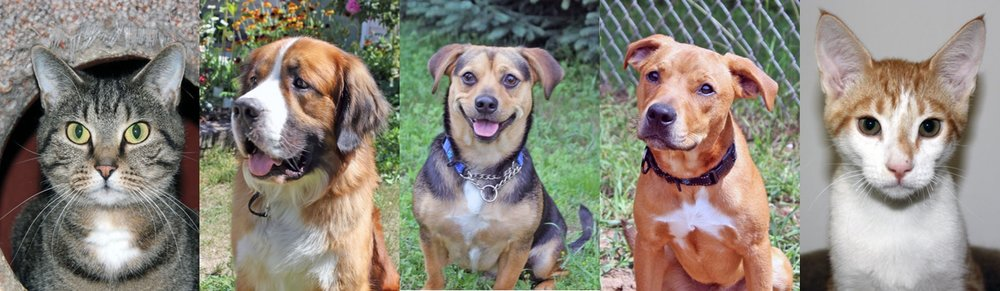

1) Can you "return" an animal to the shelter?
We understand that there may be issues arising from adoption such as allergies, monetary reasons, private reasons, etc.
We allow individuals to bring back any pets they adopted at any time, for any reason.
2) What happens if the animal I adopt is sick?
We understand at times that animals can come down with kennel cough/ or other illnesses.
If an animal is adopted and is sick we will provide the necessary medication and try to cover as much cost of the petcare as possible.
3)Where can I take my new furry friend for health checks up?
Our main goal is to have our animals be sent to loving homes...
As such we do not provide checkups or non emergency care; we will reccomend several local pet clinics near you.
4) Are your animals microchipped?
Some of the best and safest practices to ensure the saftey of our pets is to microchip them...
As such, we microchip every single pet before we send them off to loving homes!
5) What do you do to the animals that stay here for long?
We are a 100% NO KILL SHELTER
We believe that every animal deserves a chance at happiness are have a commitment to you and our furry friends to be a 100% kill free shelter!